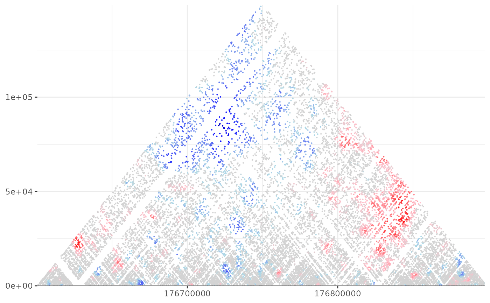

R/shaman.R
shaman_shuffle_and_score_hic_mat.Rdshaman_shuffle_and_score_hic_mat
shaman_shuffle_and_score_hic_mat(
obs_track_nms,
interval,
work_dir,
expand = 1000000,
min_dist = 1024,
k = 100,
dist_resolution = NA,
decay_smooth = NA,
hic_mcmc_max_resolution = 400,
shuffle = 80,
grid_small = 500000,
grid_high = 1000000,
grid_increase = 500000,
grid_step_iter = 40,
seed = NULL
)Name of observed 2D genomic tracks for the hic data.
2D interval on which to compute the scores.
Centralized directory to store temporary files.
Size of expansion, points to include outside the matrix for accurate computing of the score. Note that for each observed point, its k-nearest neighbors must be included in the expanded matrix.
The minimum distance between points.
The number of neighbor distances used for the score. For higher resolution maps, increase k. For lower resolution maps, decrease k.
Number of bins in each log2 distance unit. If NA, value is determined based on observed data (recommended).
Number of bins to use for smoothing the MCMC target function: the decay curve. If NA, value is determined based on observed data (recommended).
Maximum number of bins for each log2 unit.
Number of shuffling rounds for each observed point.
Initial size of maximum distance between contact pairs considered for switching
Final size of maximum distance between contact pairs considered for switching
Grid increase size
Number of iterations in each grid size
Seed for the shuffler: NULL (default) seeds it from the current time (in seconds), or a whole number between 0 and 2^31 - 1. The shuffler prints the seed it uses.
NULL if insufficient observed data, otherwise returns a list containing: 1) points - start1, start2 and score for all observed points. 2) obs - the observed points. 3) exp - the expected points. 4) exp_fn - the name of the expected (shuffled) data file 5) seed - the seed the shuffler used
This function generates an expected 2D hic matrix based on observed hic data, and computes its score.
# Set misha db to test
library(misha)
gsetroot(shaman_get_test_track_db())
mat_score <- shaman_shuffle_and_score_hic_mat(
obs_track_nms = "hic_obs",
interval = gintervals.2d(2, 176.6e06, 176.9e06, 2, 176.6e06, 176.9e06),
expand = 1e05,
work_dir = tempdir(),
shuffle = 2, # default is set to 80
grid_step_iter = 1, # default is set to 40
seed = 1
)
#> working on 21760 points
#> adjusting expand
#> combining multi tracks
#> replicating multi-contacts
#> shuffling 97618 observed points
#> going into knn with 97618 observed and 195236 expected
#> going into shuffled knn
shaman_gplot_map_score(mat_score$points)
